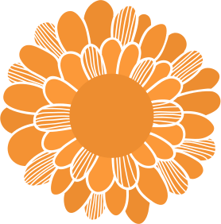
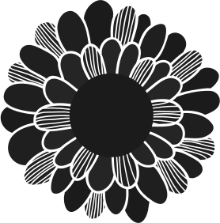

La calaca ya viene a jugar y contigo va a practicar, sigue estos pasos y compárteselo a más.
Selecciona la calaverita que más te guste.

Si una de estas calaveritas se parece a ti, ¡selecciónala!

Ahora elige el color de fondo que más te guste.
Todos los derechos reservados.